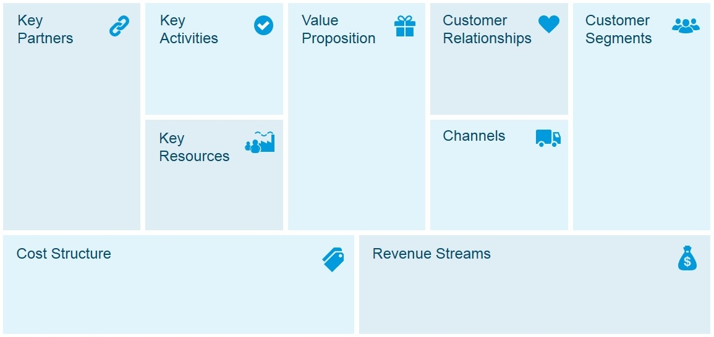

Week 2
Errol Gerson
Errol spoke mainly on innovation and the importance of “the heart of entrepreneurship.” Much like Amilia, he really spoke to me when talking about how “impossible” was an ugly word, as I feel that people can accomplish anything if given the right resources. He was the best speaker we’ve had so far, and was truly a delight to listen to. He also seemed very interested in our individual success, even going as far as setting up a meeting with Ben in 21 days to check on some tasks he gave him. Overall, a great speaker who seemed to know his stuff.
Duron Jones
Duron mainly spoke about customer tribes, and the importance of knowing who your prospective customers are and who you can make into your prospective customers. This is a very important topic, and it can make or break your product. Having a good, positive customer tribe can be very beneficial to everyone, as there is a positive cycle of feedback and updates that improves the product. I learned a lot from him, and do want to use his advice in the future.
Start on our BMC
I partnered with Farah, Dan, and Kuran to create a BMC (Business Model Canvas) for our company, WatchTower Notifications. WatchTower Notifications would focus on our premiere product, a extension for both Chrome and Firefox that combines all of your notifications into one simple area that you can easily manage. It’s honestly a very doable production, and I see myself developing something similar in the future. But anyways, we used a BMC to quickly outline our business model.

Using a BMC is actually quite easy: you just fill it out truthfully. Each category that you fill out is one step closer to conceptualizing your entire business on a single sheet of paper. It’s a really great way to organize your thoughts, and I will definitely use it again if the need arises.
Sarah Studer
Sarah Studer was the first speaker that didn’t really lecture us. Instead, we took our BMC we had just made and presented it to her for feedback. Presenting for our first time was slightly nerve racking, but we got through the whole thing in the end. She gave use some good feedback, mainly areas where we could really tighten our wording and how we could improve our cost structure. We incorporated the feedback into our Business Plan, which we worked on next.
Start on Business Plan
Our Business Plan is the main document for our business, WatchTower Notifications. We started right off with sections II (Company Description) and III (Products and Services). This helped us to define a baseline for what our company would be before diving deeper into the organization structure and other various parts of the business. We were also able to really narrow down exactly what our product would be and how it would function. With all of this done, we then moved on to section IV (Marketing Plan). Our marketing plan is very basic, as there is not much competition in our space, and extensions are of the few things left that can still be spread by word of mouth. It mostly just consisted of Google AdSense and how that might work.
Week 2 Reflection
Week two has been much better then week one, with a lot more things to do and a lot more speakers. I mean, out of the twelve 85 minute blocks this week, five of them were speakers. All I’m saying, maybe spread the speakers out a bit more next time. But overall, it’s been much better then week one. I’ve felt that we’ve made significant progress on our BMC and Business Plan, and I’m really feeling good about our company. Only one week left!